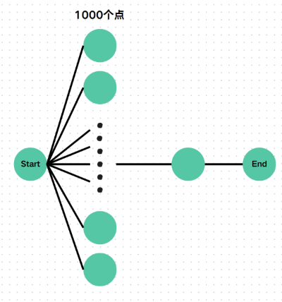
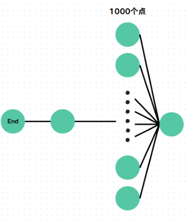

BFS
广度优先搜索 (Breadth First Search) ，字面意思就是由广度优先的搜索方式。DFS是使用的 “不撞南墙不回头”，BFS 使用的是哪个点离自己距离越近，就先搜索那个点。
BFS 的实现是利用队列 Queue 来实现的，每次加入离自己距离最近的点，然后依次取出队列头进行相同的操作。下面是一个 BFS 的基本框架：
1 2 3 4 5 6 7 8 9 10 11 12 13 14 15 16 17 18 19 20 21 22 23 24 25 26 | |
优化1：双向搜索
观察
在普通 BFS 时我们经常是从起点一点一点加边到终点。在加边的过程中，我们不管有多少边，就都都加进去了。但是遇到这样的图，我们就可能会超时：

这样发现，如果我们从终点开始搜索会更快，于是 BFS 改为从终点 \(\to\) 起点，于是我们又遇到了一个问题，如果图张这样，那么我们还是会超时：

但是这样我们又发现，这样从起点开始比较好，更快。
总结
总结发现在写 BFS 时，不能直接从起点或终点出发，否则会遇到上面两种情况，会导致 TLE。
所以使用双向搜索来优化 BFS，这个用法是在优化 BFS 时可能要使用的，实现是从两侧展开分枝，哪边分枝少就从哪边展开。
Code
下面是使用了双向搜索优化的 BFS 代码：
1 2 3 4 5 6 7 | |
0-1BFS / 双端队列 BFS
问题
现在有一个问题，题目描述如下：
有一张
n个点m条边的无向图，边权为 0 或 1，问从节点 1 到节点n的最短距离。
观察
这道题仅有两个边权的可能性，如果我们使用 BFS ，那么会有问题 \(\to\) 答案不是最优解（因为边权可能不一样），所以我们需要先让边权较小者（0）进入，而边权较大者后入（1），这个时候就可以使用 01BFS 了。
双端队列 BFS 就是使用双端队列的 BFS，可以实现有两种花费的路径进行 BFS，具体实现是用一个双端队列，将花费较小的元素放在队列前端，花费较大的放在尾端，这样维持了 BFS 的单调性，满足了 BFS 的基本需求。
总结
发现边权只有两个可能性，而使用 01BFS 来维护单调性，使得答案正确。
Code
下面是一份用 01BFS 的主要框架。
1 2 3 4 5 6 7 8 9 10 11 12 13 14 15 16 17 18 19 20 21 22 23 24 25 26 27 28 29 30 31 32 33 34 | |